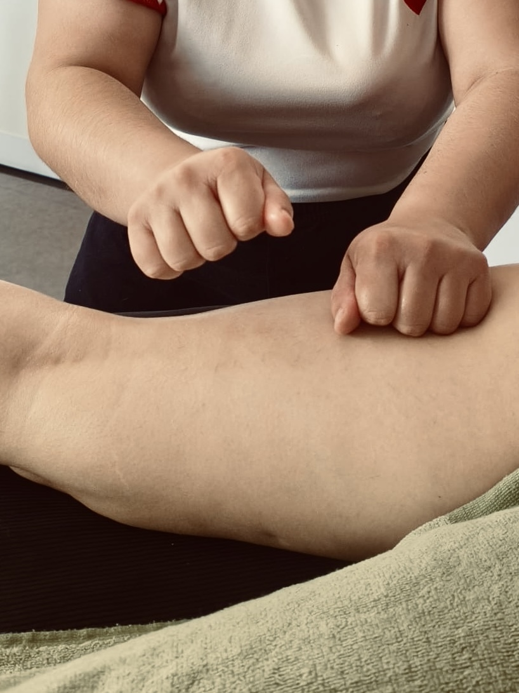
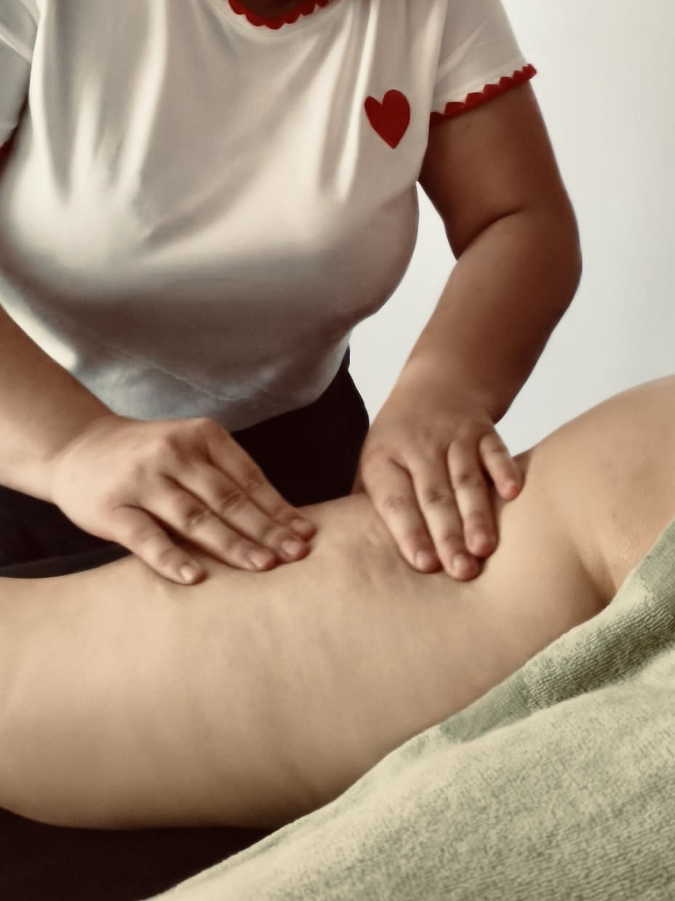

Un soin doux et profond
Le drainage lymphatique balinais stimule la circulation lymphatique, aide a reduire la retention d'eau et procure une sensation immediate de legerete.
Ideal en periode de grossesse ou en post-partum, il permet de decongestionner le corps, relancer les circulations et favoriser un mieux-etre global.
Pendant la grossesse
- Soulage les jambes lourdes
- Reduit la sensation de gonflement
- Ameliore la circulation
- Apporte un profond moment de detente
Un vrai moment pour relacher le corps dans une periode tres sollicitante.
En post-partum
- Elimine la retention d'eau
- Relance la circulation
- Allege le corps en douceur
- Favorise la recuperation
Un accompagnement tout en douceur pour vous reconnecter a votre corps.
Pourquoi privilegier une cure ?
Le drainage lymphatique est encore plus efficace lorsqu'il est realise en cure. Les bienfaits sont progressifs et durables :
- → Resultats visibles plus rapidement
- → Sensation de legerete qui s'installe dans le temps
- → Meilleure elimination et detoxification
Forfait 6 seances : 5 payantes + 1 offerte.
Tarifs & Formules
Seance individuelle ou cure complete
Seance individuelle
30 minutes
1 zone
50,00 EUR
45 minutes
2 zones
65,00 EUR
1 heure
Corps entier
80,00 EUR
Cures (forfait 5 + 1 offerte)
30 min × 6
1 zone
250,00 EUR
soit 41,67 EUR / seance
45 min × 6
2 zones
325,00 EUR
soit 54,17 EUR / seance
1 h × 6
Corps entier
400,00 EUR
soit 66,67 EUR / seance
Apres achat de la cure, reservez chaque seance individuellement via le bouton "Reserver" ci-dessus.

Rituel Douceur Bulleo
Massage femme enceinte ou post-partum + Drainage lymphatique balinais en une seance complete de 1h15. Un soin complet qui allie detente profonde et relance du corps.
- Detente profonde + relance circulatoire en une seule seance
- Tarif preferentiel : 115 € au lieu de 125 € (75 € massage 1h + 50 € drainage 30 min)
- Ideal en cadeau pour future ou jeune maman
Le soin en images



Choisir un creneau
Selectionnez la duree puis votre creneau
Questions frequentes
Le drainage lymphatique est-il sans danger pendant la grossesse ?
Oui. Pratique par une professionnelle formee, le drainage lymphatique balinais est doux et adapte a la grossesse. Il soulage particulierement les jambes lourdes, le gonflement et active la circulation, sans appuyer sur le ventre.
Pourquoi faire une cure plutot que des seances ponctuelles ?
Le drainage lymphatique est plus efficace en cure : les bienfaits sont progressifs et durables. La cure 6 seances (5 payantes + 1 offerte) permet d'installer la sensation de legerete dans le temps et d'optimiser l'elimination.
Quelle est la difference entre 30 min, 45 min et 1 h ?
30 min cible une zone (jambes ou ventre par exemple), 45 min couvre deux zones, et 1 h est un drainage corps entier. Le choix depend de votre besoin : zone localisee ou relance globale.
Qu'est-ce que le Rituel Douceur Bulleo ?
C'est notre soin signature : un massage femme enceinte ou post-partum combine au drainage lymphatique balinais sur 1h15. Pour un soin complet alliant detente profonde et relance circulatoire — 115 EUR.
Comment se passe la reservation des seances apres l'achat d'une cure ?
Apres l'achat de votre cure, vous reservez chaque seance individuellement via le bouton "Reserver" ci-dessus en choisissant la duree correspondante. Mentionnez "Cure achetee" en commentaire lors de la reservation.